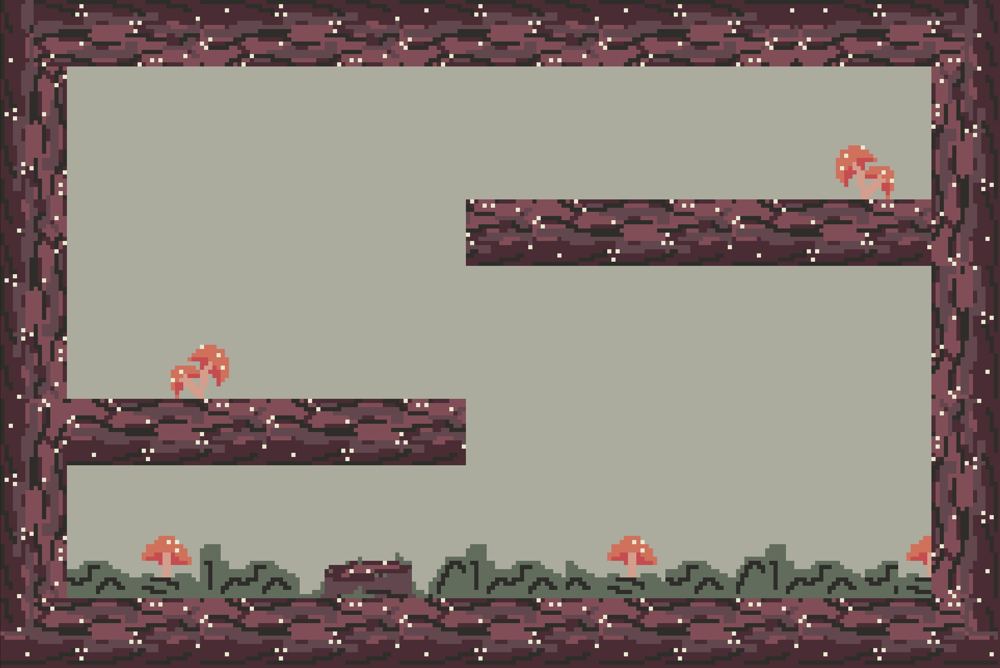
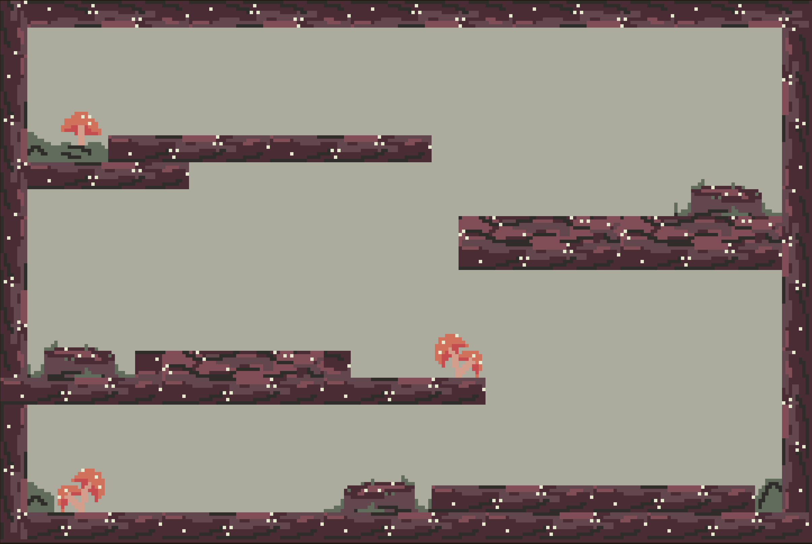
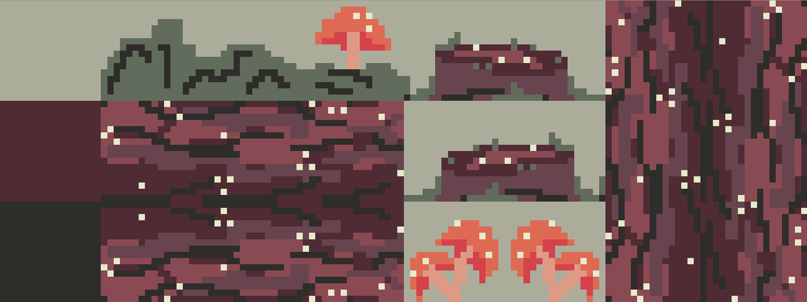
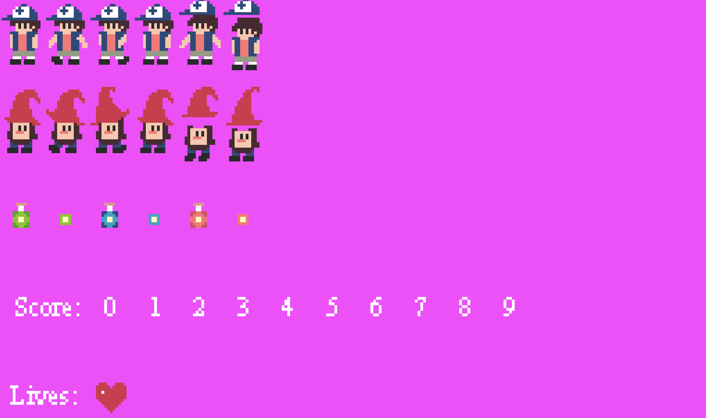

mystery falls 🎮 click to play
Mystery Falls is a 2D platformer video game created using machine-level programming in C, utilizing a Gameboy Advance emulator. The game is an independent project integrating graphics, sound, and user interaction. It takes inspiration from the animated Disney show, Gravity Falls, recreating memorable characters in GBA-form.
I designed the characters and created animated sprites, sprite sheets, tilemaps, and backgrounds using the pixel art software, Usenti. The title screen includes the implementation of parallax movement using GBA registers, while the game displays in-game modification of tilemaps and sprite palettes.
Tilemaps for levels 1 and 2:


Sprite sheet and tiles:

